АВТОМАТИЗИРОВАТЬ СИСТЕМУ ПУНКТА ПРОКАТА ЭЛЕКТРОСАМОКАТОВ
В УЧЕБНОМ ЗАВЕДЕНИИ
Сложность: *
Теги: документы, события документов, регистры накопления остатков, запросы к виртуальным таблицам
ЗАДАЧА
Заказчик просит автоматизировать систему пункта проката электросамокатов в учебном заведении.
Нужно фиксировать в информационной системе, какой студент забрал или вернул самокат. Выдача и возврат должны быть фиксироваться отдельно, причем количество самокатов учитывать нет необходимости, поскольку каждый студент может арендовать (и, соответственно, сдать) не более одного самоката.
В результате выполнения лабораторной работы должен получиться отчет вида:
|
АРЕНДАТОР |
|
Иванов Иван Иванович |
|
Петров Петр Петрович |
q Создать новую информационную базу.
q Открыть информационную базу в режиме «Конфигуратор».
q Открыть окно конфигурации.
Подробнее о том, как это сделать, смотрите в Лабораторной работе № 2 (стр. 17).
Начнем выполнение лабораторной работы с создания справочников.
Определение
Справочник – это объект конфигурации, который хранит справочную информацию, например, перечень товаров или список сотрудников (более подробно про справочники можно прочитать здесь: https://v8.1c.ru/platforma/spravochniki/).
Создадим справочник, в котором будет храниться список студентов, которые могут арендовать электросамокат, и назовем его «Студенты».
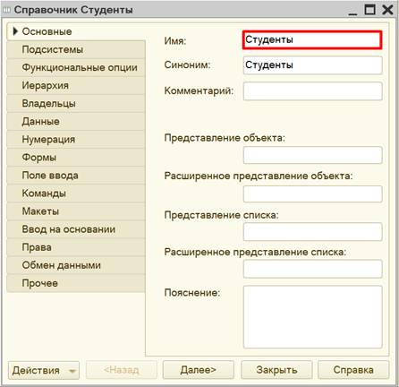
Для решения данной задачи другие объекты аналитики нам не понадобятся.
Запустим программу в режиме «1С:Предприятие» и добавим несколько студентов.
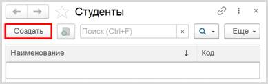
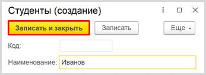
Обратите внимание, что поля «Код» и «Наименование» система сгенерировала самостоятельно при добавлении нового справочника. Эти поля являются стандартными реквизитами. Стандартные реквизиты платформа создает автоматически, исходя из свойств конкретного объекта конфигурации. Поле «Код» заполнять не нужно, система сделает это автоматически. Поле «Наименование» является обязательным для заполнения.
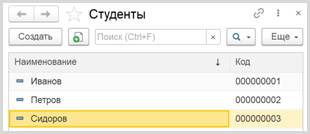
Таким образом, было организовано хранение в системе списка студентов.
Далее нужно реализовать закупку электросамокатов для точки проката.
Для данной цели используем объект конфигурации документ.
Определение
Документ – это объект конфигурации, хранящий информацию о каких-либо событиях, произошедших в «жизни» предприятия. Например, с помощью документа можно зарегистрировать (то есть сохранить данные документа для последующей обработки) продажу товаров или начисление зарплаты (подробнее про документы можно прочитать здесь: https://v8.1c.ru/platforma/dokumenty/).
Создадим документ «Закупка».
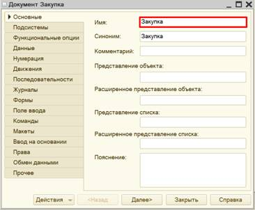
Для формирования структуры документа переходим на вкладку «Данные».
Все самокаты в нашем прокате совершенно одинаковы, поэтому хранить данные о самих самокатах нам не нужно. Важно лишь учитывать, сколько таких самокатов было закуплено для проката.
Для этого добавим новый реквизит документа «Количество» с помощью кнопки «Добавить». Тип данных – «Число».
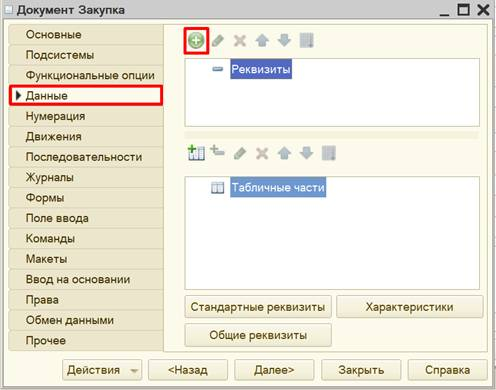
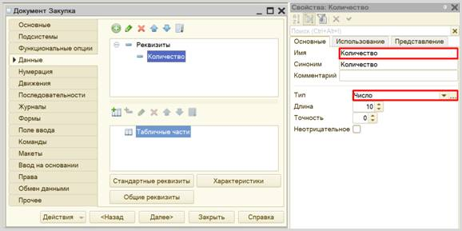
Откроем программу в режиме «1С:Предприятие» и зафиксируем закупку нескольких электросамокатов.
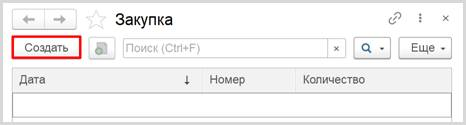
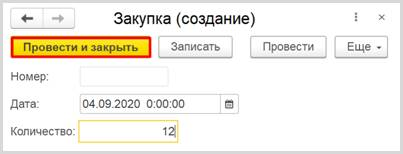
Легко заметить, что система сгенерировала для документа другие стандартные реквизиты: «Номер» и «Дата». Оба поля заполняются автоматически, дата может быть изменена.
Любой документ может находиться в одном из двух состояний: подготовленный к свершению или совершенный:
q чтобы подготовить документ для использования в будущем, нужно его записать;
q чтобы отметить документ как совершенный – провести.
Таким образом, документ для регистрации закупки электросамокатов был успешно реализован.
Следующий шаг – это регистрация операции по выдаче электросамокатов в аренду.
Создадим документ «СдачаВАренду».
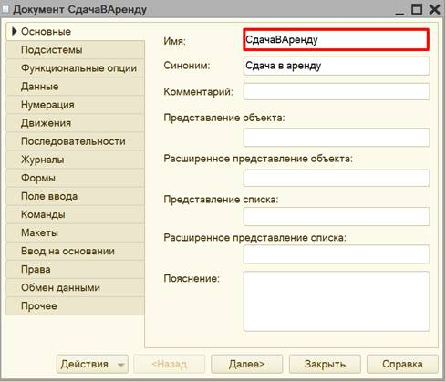
Переходим на вкладку «Данные» для формирования структуры документа.
В данном документе нужно фиксировать дату и время, а также ФИО студента, арендовавшего самокат. Поле «Дата» будет создано системой автоматически, а вот поле для ввода ФИО студента отсутствует. Добавим реквизит «Студент» с типом «СправочникСсылка.Студенты». Данный реквизит будет содержать ссылку на объект справочника «Студенты».
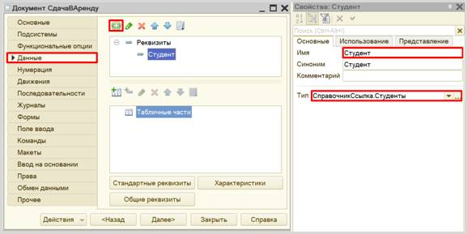
Проверим работоспособность документа в режиме «1С:Предприятие».
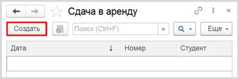
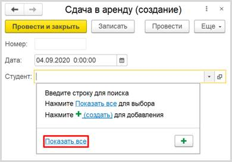
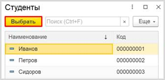
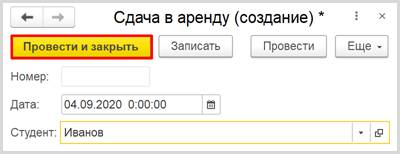
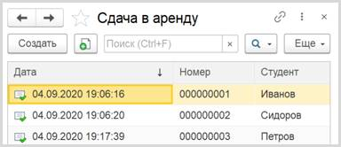
Теперь информационная система способна регистрировать дату и ФИО студента, арендовавшего самокат.
Регистрация возврата самокатов будет выглядеть аналогично регистрации сдачи в аренду.
Создадим новый документ «Возврат», копируя документ «СдачаВАренду». Для этого выберем нужный документ в окне конфигурации и нажмем на кнопку «Добавить копированием».
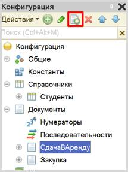
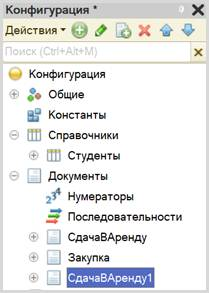
Откроем окно редактирования документа «СдачаВАренду1» и изменим название документа на «Возврат».
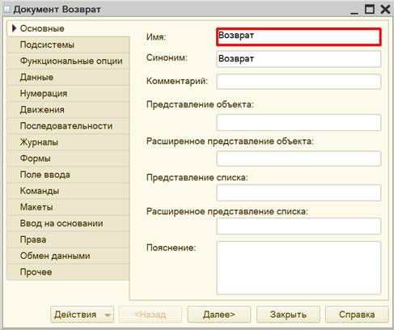
Чтобы убедиться в том, что все было сделано правильно, перейдите на вкладку «Данные» и проверьте, что у данного документа существует реквизит «Студент».
Созданная нами информационная система может хранить информацию о закупке электросамокатов, факте сдачи самоката в аренду конкретному студенту, а также факт возврата самоката студентом.
Предположим, что с помощью
документа «Закупка» мы зарегистрировали в системе 12 электросамокатов.
Если Иванов возьмет один из самокатов в аренду, то в прокате должно остаться
11. По возвращении самоката в прокате снова должно быть 12 самокатов.
Но
на деле все введенные нами документы никак между собой не связаны. Нам следует
использовать такой объект, который сможет связать между собой данные документы,
а также будет накапливать итоговые значения для расчета остатков. Такой объект
называется регистром накопления.
Определение
Регистр накопления – это такая итоговая таблица, которая может автоматически считать какие-либо элементы, например, денежные средства, материалы (дополнительно про регистры накопления можно прочитать здесь: https://v8.1c.ru/platforma/registr-nakopleniya/).
Добавим новый регистр накопления «ОстаткиСамокатов» вида «Остатки».
Вид регистра «Остатки» позволяет настроить данный регистр таким образом, что какие-то объекты будут вносить в него данные, а какие-то, наоборот, вычитать из него. Таким образом и получается хранение остатков.
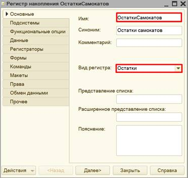
Открываем вкладку «Данные» для формирования структуры регистра накопления.
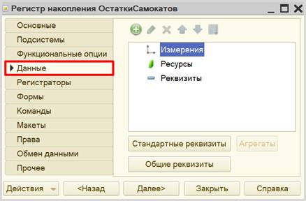
Добавим ресурс. Что мы хотим считать с помощью данного регистра? Мы хотим считать количество. Следовательно, количество и будет являться ресурсом. Тип данного реквизита – «Число».
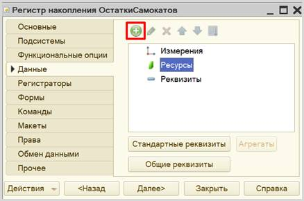
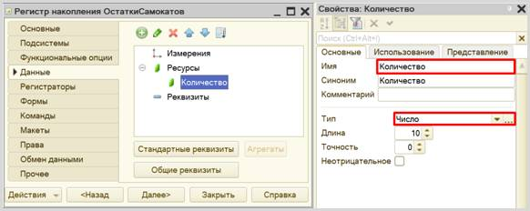
Необходимо создать еще один регистр накопления «АрендаСамокатов» вида «Остатки». Он уже будет учитывать, кто взял или вернул самокат.
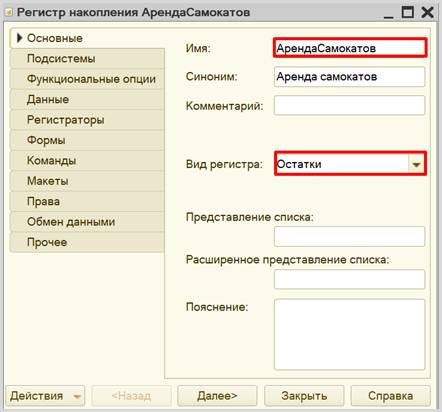
Открываем вкладку «Данные» для формирования структуры регистра накопления.
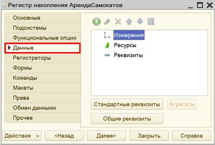
В данном регистре накопления (по аналогии с предыдущим) в качестве ресурса выступает реквизит «Количество», тип – «Число».
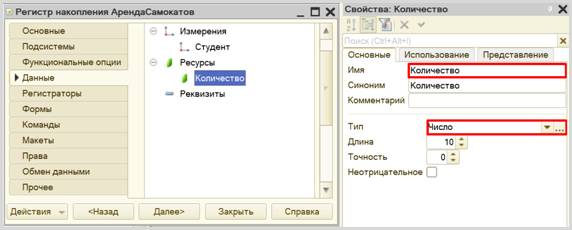
Чтобы разобраться с измерением, следует понять, в разрезе чего мы хотим считать количество. Мы хотим учитывать, какому студенту сдали самокат в аренду. Значит, в качестве измерения нужно добавить реквизит «Студент». Тип данного реквизита – «СправочникСсылка.Студенты».
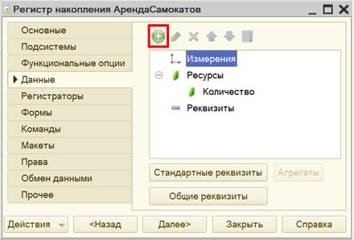
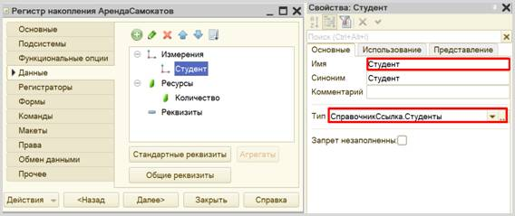
Обратите внимание, что типы данных этих регистров совпадают с типами данных регистров, которые были добавлены в документы.
Взаимосвязь созданных документов и регистров накопления должна выглядеть следующим образом:
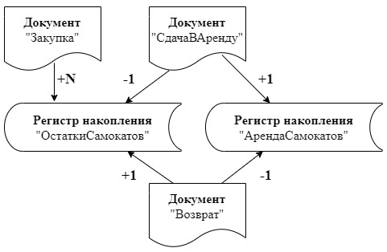
При проведении документа «Закупка» в регистр накопления «ОстаткиСамокатов» будет передано то количество самокатов, которое будет указано в документе.
При проведении документа «СдачаВАренду» будет производиться вычет одного самоката из регистра накопления «ОстаткиСамокатов», но при этом студент, взявший самокат, будет внесен в регистр «АрендаСамокатов» в качестве арендатора.
Документ «Возврат» будет делать все наоборот: добавлять единицу в «ОстаткиСамокатов» и убирать студента из списка должников из реквизита «АрендаСамокатов».
Таким образом, количество электросамокатов в регистре накопления «ОстаткиСамокатов» должно соответствовать текущему количеству самокатов на складе. А регистр накопления «АрендаСамокатов» должен содержать список должников.
Чтобы регистры накопления заработали, нужно сделать следующее:
1. Определить, какие данные будут попадать в каждый регистр (определить документы-регистраторы).
2. Описать, каким образом данные из каждого документа-регистратора должны попадать в регистры.
Начнем с документа «Закупка». Откроем окно редактирования данного документа и перейдем на вкладку «Движения». Отметим регистр накопления «ОстаткиСамокатов», поскольку данные о количестве закупленных самокатов необходимо передавать только в этот регистр. Воспользуемся конструктором движений.
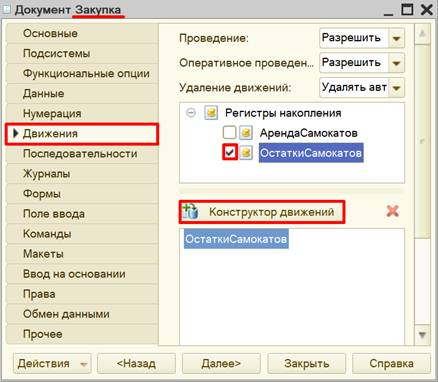
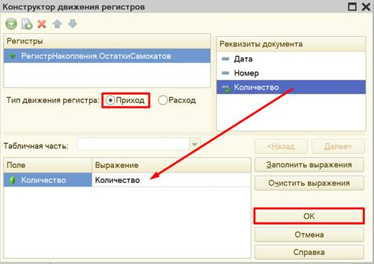
Окно конструктора движений состоит из нескольких областей:
q Левая верхняя область позволяет переключаться между регистрами (поскольку один документ может делать движения сразу в несколько разных регистров).
q Правая верхняя область описывает реквизиты документа-регистратора.
q В нижней части окна описаны реквизиты регистра накопления. Необходимо заполнить поле «Выражение» реквизитами документа.
Данный документ фиксирует количество закупленных электросамокатов. Следовательно, он должен в регистр накопления приходить со знаком «+» (плюс). Для этого нужно выбрать тип движения регистра «Приход».
Если все было сделано правильно, имена и типы реквизитов совпадают, то при нажатии на кнопку «Заполнить выражения» реквизиты регистра заполнятся автоматически. Если этого не произошло, то заполните поле «Выражение» вручную, путем выбора соответствующих реквизитов документа.
При нажатии на кнопку «ОК» система сформирует программный код, который при успешном проведении документа произведет движения в регистр накопления, то есть скопирует данные из документа в регистр накопления.
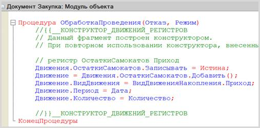
Программный код может быть отредактирован вручную, если возникли проблемы при работе с конструктором.
Переходим к настройке документа «СдачаВАренду». Данный документ должен делать движения в оба регистра накоплений.
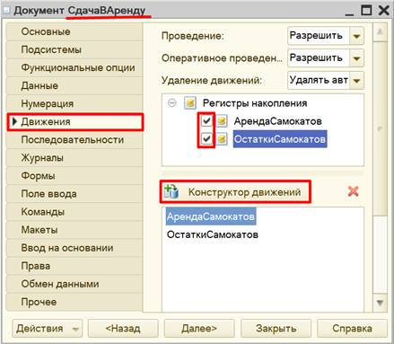
Сначала опишем действия документа при работе с регистром «ОстаткиСамокатов».
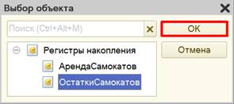
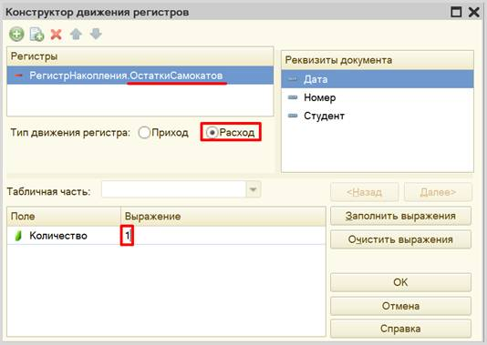
Теперь опишем взаимодействие с другим регистром накопления. Для этого нужно нажать на кнопку «Добавить» и выбрать регистр накопления «АрендаСамокатов».
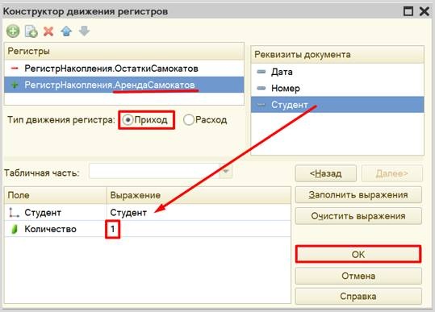
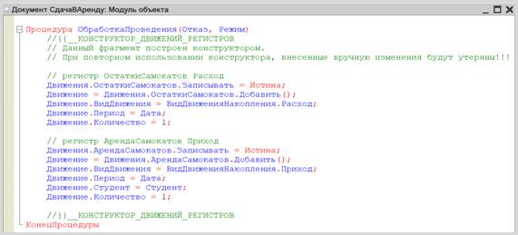
Переходим к настройке последнего документа – «Возврат». Данный документ настраивается аналогично документу «СдачаВАренду».
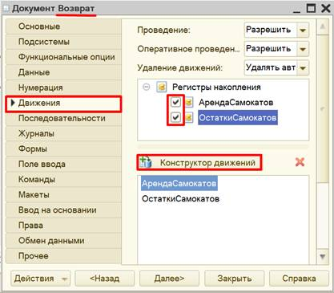
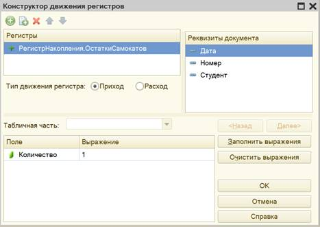
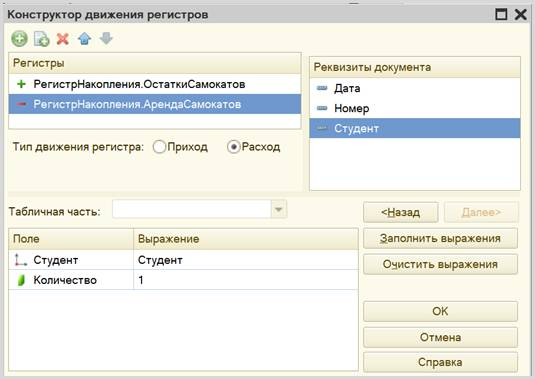
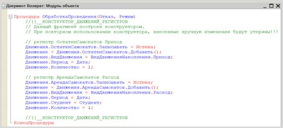
Готово! Теперь каждый из этих документов копирует данные в регистры накопления, прибавляя или вычитая количество электросамокатов.
Проверим работу регистра в режиме «1С:Предприятие».
Для начала нужно перепровести (провести заново) все созданные ранее документы «Закупка» и «Сдача в аренду», чтобы данные из них попали в регистр накопления. Кроме того, добавим новый документ «Возврат».
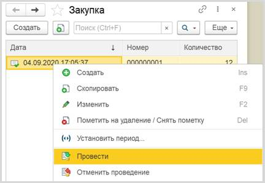
Чтобы заглянуть в содержимое регистра накопления, следует прибегнуть к функциям технического специалиста.
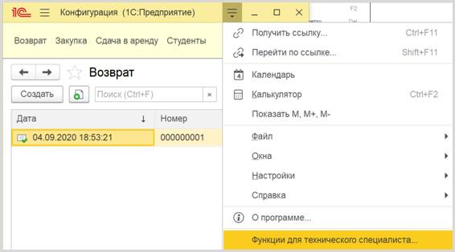
Найдем наши регистры, откроем их и посмотрим на движения.
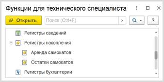
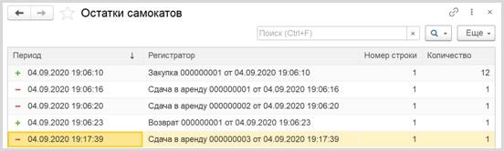
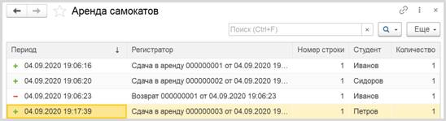
В регистры накопления действительно добавляются строки, соответствующие проведенным документам.
Для решения задачи осталось
построить отчет, который будет отображать список студентов, которые еще не
вернули самокаты.
Определение
Отчет – это такой объект конфигурации, который формирует данные в понятном для пользователя виде, например, в виде таблицы или диаграммы (подробнее про отчеты можно прочитать здесь: https://v8.1c.ru/platforma/otchet/).
Создадим новый отчет «ОтчетПоАрендаторам». Для наполнения отчета воспользуемся конструктором схемы компоновки данных.
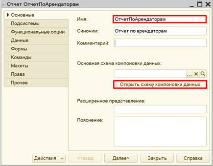
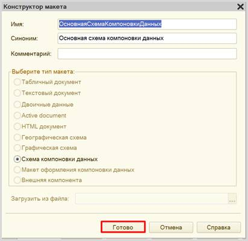
Все созданные нами объекты конфигурации представляют собой таблицы базы данных. В режиме «1С:Предприятие» мы заполняем эти таблицы данными. Чтобы получить эти данные для отображения в отчете, нужно сформировать запрос к базе данных.
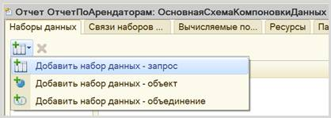
Воспользуемся конструктором запроса.
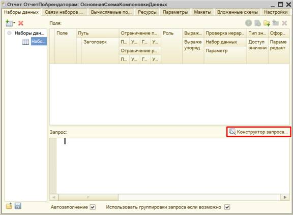
Открывшееся окно имеет три части:
q Часть слева отображает все объекты конфигурации, имеющиеся в нашей базе данных. Нужно выбрать лишь те объекты, из которых мы хотим получать данные.
q Посередине находятся таблицы – это выбранные нами объекты, откуда мы хотим получать данные для конкретного отчета.
q Справа поля – это те значения (поля), которые мы хотим увидеть в отчете.
Данные будем брать не из регистра накоплений напрямую, а из виртуальной таблицы, которую создает этот регистр автоматически. Данная виртуальная таблица позволит получить уже просуммированные значения по всем документам.
Чтобы перенести данные из одного окна в другое, просто перетащите
нужные поля с помощью мыши либо воспользуйтесь стрелочками, расположенными
между окнами.
В результате данное окно должно быть заполнено следующим образом:
Запрос к базе данных должен выглядеть следующим образом:
Запрос к базе данных сформирован. Теперь нужно настроить внешний вид отчета. Для этого следует перейти на вкладку «Настройки».
Для настройки внешнего вида отчета воспользуемся конструктором настроек отчета.
Наш отчет будет иметь форму списка.
Далее нужно выбрать поля, которые будут отображены в отчете.
Осталось лишь убедиться, что отчет работает верно. Для этого посмотрим на отчет в режиме «1С:Предприятие».
Таким образом, отчет выводит список арендаторов, не вернувших самокат в пункт проката.
Стоит отметить, что получившаяся информационная система не способна отслеживать остатки и работает «на честном слове». Это значит, что система не способна отслеживать, когда количество самокатов на складе станет отрицательным или тот факт, что один студент решит арендовать два самоката (хотя мы ограничили это условием задачи).
Поставленная задача решена